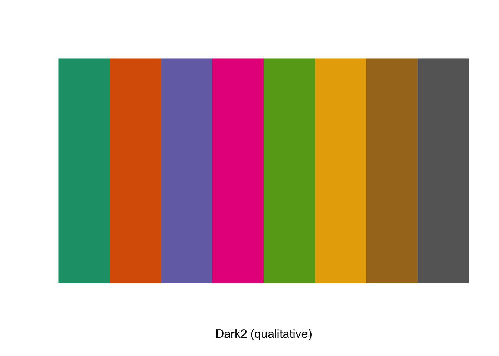

sessionInfo()[6]$basePkgs
[1] "stats" "graphics" "grDevices" "utils" "datasets" "methods"
[7] "base" En av de store trekkplastra til R er det enorme biblioteket med utvidelser de har. Disse kommer i form av pakker1 (packages på engelsk). Egentlig er alt i R pakker. Når vi starter R får vi noen få pakker, hvor den viktigste er base. Vi kan se hvilke pakker vi har lasta inn slik
sessionInfo()[6]$basePkgs
[1] "stats" "graphics" "grDevices" "utils" "datasets" "methods"
[7] "base" Legg merke til at base er inkludert i denne lista. Dette er kjernen av R. Vi kommer til å supplere med masse andre pakker etter hvert som vi arbeider med ting. Pakkene er stort sett sentrert rundt å løse et eller annet problem. Her er noen eksempler:
haven: importere og eksportere til andre statistikkprogrammer som SPSS, Stata, SASopenxlsx: lese og skrive excelfiler.lubridate: håndtere datovariabler på en bedre måteNoen pakker bruker vi mer en andre. Et eksempel er tidyverse, men den diskuterer vi under.
Første gang du bruker en pakke må den installeres.
install.packages("RColorBrewer")Vi laster vanligvis inn alle pakkene våre i toppen av skriptet.
library(RColorBrewer)Legg merke til at vi angir pakka som en streng (ved å bruke ") når vi installerer, men som et object (ved å ikke bruke ") når vi laster inn pakka. Det er en god grunn til det, men ikke en vi har tid å gå inn på nå.
En pakke trengs bare å installeres én gang, men den må lastes inn på nytt hver gang du starter en ny session i R. Du starter en ny session hver du starter programmet på nytt.
Du må laste inn pakka for å kunne ta i bruk funksjonene fra den. Her viser vi funksjonene til pakka RColorBrewer som kan brukes for finne komplementære farger.
display.brewer.all(colorblindFriendly = TRUE)
Det siste jeg sa er forresten ikke helt sant. Du kan kjøre en funksjon fra en pakke uten å ha lasta den inn. Da skriver du navnet på pakka, etterfult av to kolon og så navnet på funksjonen.
RColorBrewer::display.brewer.pal(n = 8, name = 'Dark2')
Så lenge pakka er lasta inn kan jeg bruke alle funksjonene fra pakka. Noen ganger trenger jeg bare én funksjon fra en pakke, og da benytter jeg meg av det over istedenfor å laste inn hele pakka.
Tidyverse refererer til
Du kan lese mer om Tidyverse på nettsida deres. Det er også en lærebok som går grundigere gjennom alle funksjonene deres, R for Data Science.

Når man kjører library(tidyverse) vil den laste inn alle pakkene nevnt her. Blant annet dplyr, ggplot2, etc. I tillegg laster den inn enkeltfunksjoner fra andre pakker. F.eks. laster den inn pipe operatoren ( %>%) fra magrittr. Mer om den seinere. Dermed er dette egentlig en snarvei for å slippe å laste inn flere pakker.
Tidyverse-pakkene er designa for å harmonisere med hverandre, og det gjør dem veldig sterke. Den underliggende filosofien gir også et bra rammeverk for andre pakker. Vinn-vinn.
Reint praktisk er det sånn at mange av funksjonene i tidyverse allerede eksisterer i base R. F.eks. filtrering, mutering, og etter R v.4.1., pipe-funksjonen. Jeg bruker likevel tidyverse-variantene fordi disse er så mye lettere å forstå, skrive, og lese. De er utvikla for folk som jobber som oss, med tabeller og datasett. Som nybegynner er det ikke bare bare å forstå forskjellen mellom base R og tidyverse, så her er det viktigste:
base R og i tidyverse. Dette skjer ofte på StackOverflow.tidyverse-funksjoner har et datasett som første argument i funksjonen. Dette gjør at vi lett kan pipe funksjoner etter hverandre.Hvorfor er piper så nyttig? De lar oss flette sammen en serie operasjoner uten å måtte mellomlagre objekter. La oss si at vi har et datasett med biler og deres egenskaper. Vi vil
library(tidyverse)── Attaching packages ─────────────────────────────────────── tidyverse 1.3.2 ──
✔ ggplot2 3.3.6 ✔ purrr 0.3.5
✔ tibble 3.1.8 ✔ dplyr 1.0.10
✔ tidyr 1.2.1 ✔ stringr 1.4.1
✔ readr 2.1.3 ✔ forcats 0.5.2
── Conflicts ────────────────────────────────────────── tidyverse_conflicts() ──
✖ dplyr::filter() masks stats::filter()
✖ dplyr::lag() masks stats::lag()mtcars <- mtcars
cars_filtered <- filter(mtcars, cyl >= 6)
cars_filtered_kg <- mutate(cars_filtered, wt = wt * 0.45359237)
cars_filtered_kg_grouped <- group_by(cars_filtered_kg, gear)
cars_filtered_kg_grouped_mean <- summarise(cars_filtered_kg_grouped, snitt = mean(mpg))
cars_filtered_kg_grouped_mean# A tibble: 3 × 2
gear snitt
<dbl> <dbl>
1 3 15.7
2 4 19.8
3 5 16.8cars_filtered_kg_group_mean <- mtcars %>%
filter(cyl >= 6) %>%
mutate(wt = wt * 0.45359237) %>%
group_by(gear) %>%
summarise(snitt = mean(mpg))
cars_filtered_kg_grouped_mean# A tibble: 3 × 2
gear snitt
<dbl> <dbl>
1 3 15.7
2 4 19.8
3 5 16.8Det andre eksemplet er
Jeg kommer til å bruke piper en god del både her og i alle skriptene mine. Så det er greit å vite hva det går ut på. Syntaksen x %>% y kan leses som y får x. Vi tar x og sender det til y som tar det inn som sitt første argument. Tidyverse-funksjonene er bygd rundt ideen om at det første argumentet til funksjonene er et datasett. Legg merke til at det er et datasett som er det første objektet i alle funksjonen jeg bruker i eksemplet uten pipe.
Noen funksjoner, som base::sum() har ikke data som sitt første argument, men en vektor. Hvis man sender et datasett til sum() vil man få en feilmelding.
mtcars %>% sum(wt)Error in mtcars %>% sum(wt): object 'wt' not foundFor å få slike funksjoner til å funkere med ei pipe, kan man ofte bruke en funksjon fra magrittr:
mtcars %>% sum(.$wt)[1] 14045.15. blir her et alias for det aktuelle datasett, og dette er det samme som å skrive:
sum(mtcars$wt)[1] 102.952Da jeg lærte R var det %>% fra magrittr som var den gjeldende pipa. Den var så nyttig at ei pipe til slutt blei inkorporert i base R. Dette skjedde i R 4.1.0. Base Rs pipe ser slik ut: |>. Den fungerer i hovedsak lik %>%. Når jeg fortsetter å bruke den gamle magrittr-pipa er det bare fordi jeg er gammel og ikke liker å endre på ting som funker. Dessuten har Rstudio en flott snarvei til %>% via ctrl + shift + M.
Dere velger altså sjøl om dere går for %>% eller |>. Husk bare at for å bruke %>% så må tidyverse eller magrittr lastes inn først. (tidyverse låner noen av funksjonene fra magrittr, men laster ikke inn alle funksjonene fra den pakka).
En vanlig intuisjon man får når man begynner med piper er at det er en måte å “arbeide baklengs”. Man starter å lese nedenfra og opp. Dette stemmer ikke. Tenk heller at du starter med en ting, sender den videre til en funksjon, og sender resultatet av dette videre til neste funksjon, sender resultatet av dette videre til neste funksjon, og så videre.
Noen ganger vil dere kanskje se pakker omtalt som online bibliotek (library). Og vi bruker jo funksjonen library() for å laste inn en pakke. Hva er forskjellen på en pakke og et bibliotek? I R er det den mappa hvor alle pakkene som er installert blir lagra som kalles bibliotek. Sjølve funksjonssamlinga kalles en pakke.↩︎